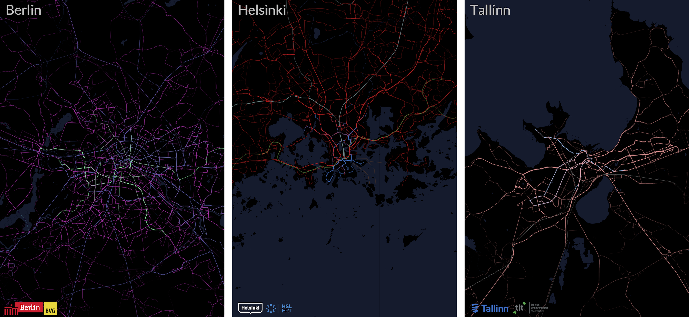
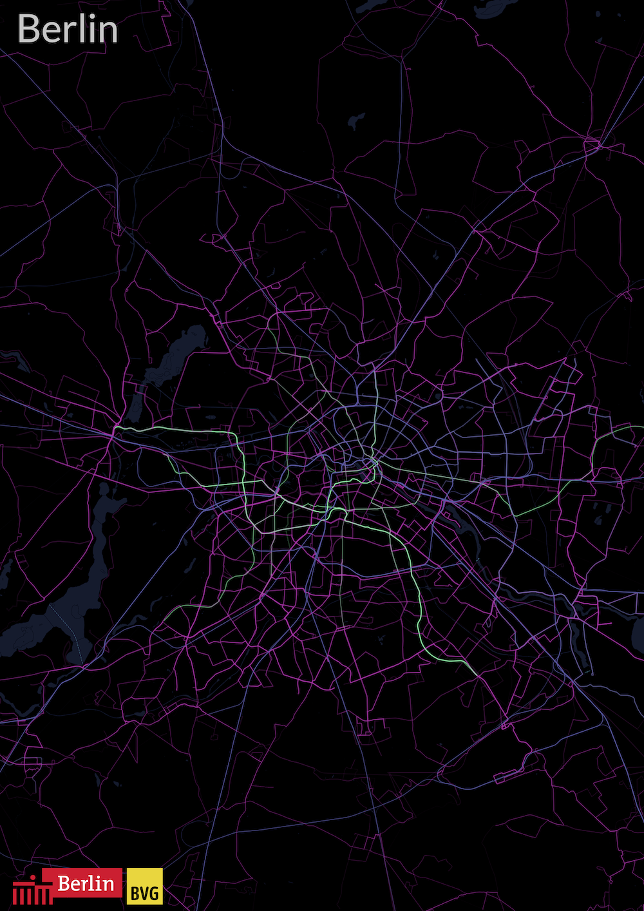
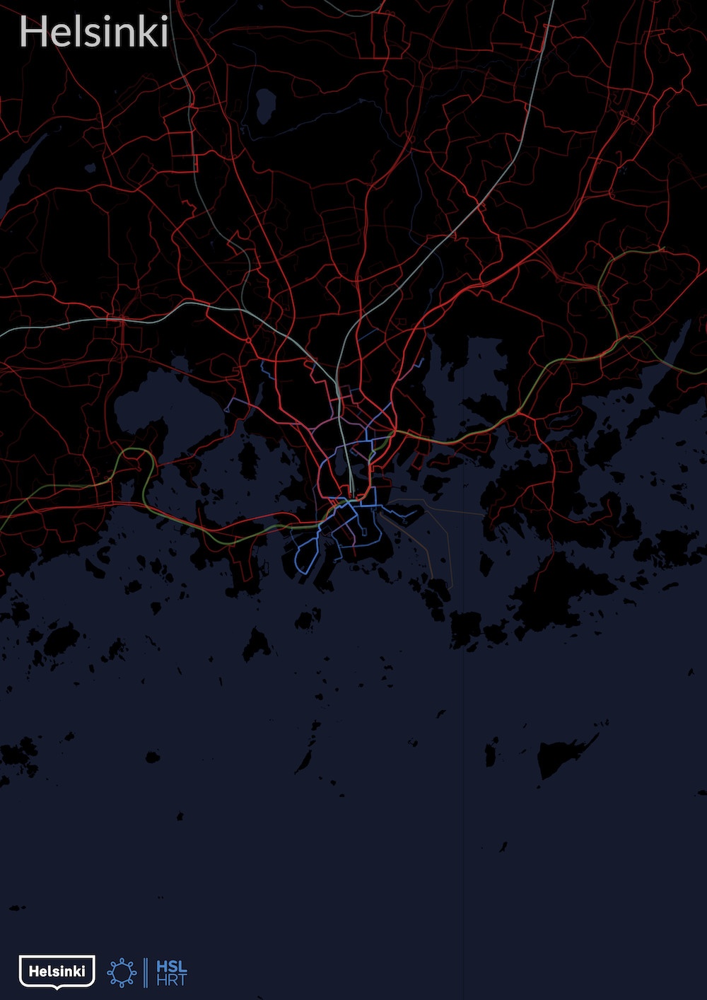
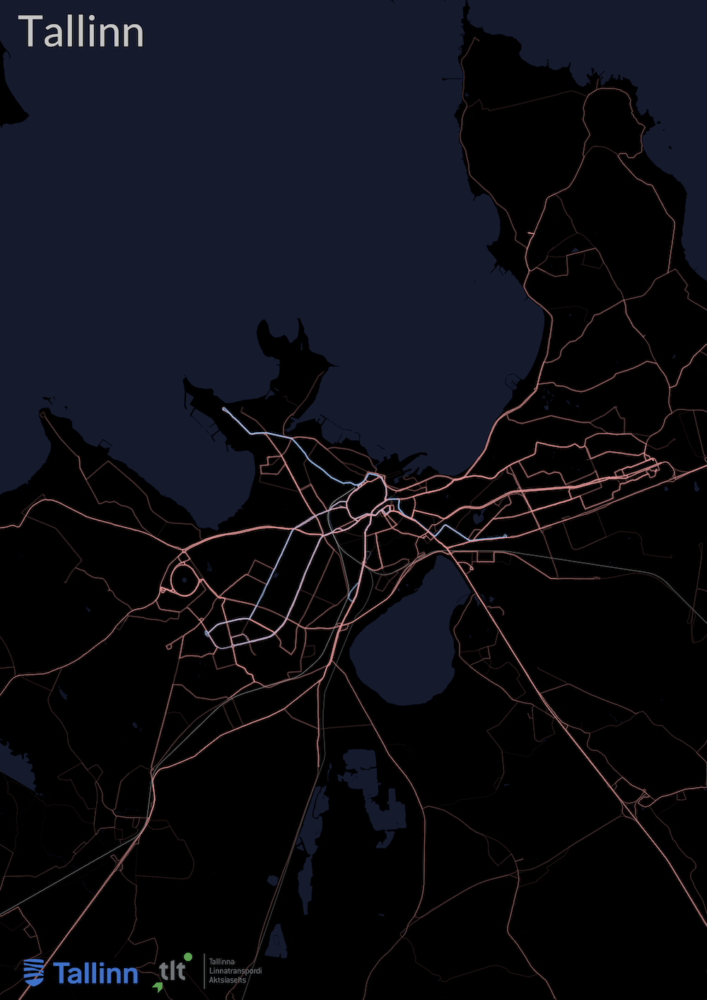
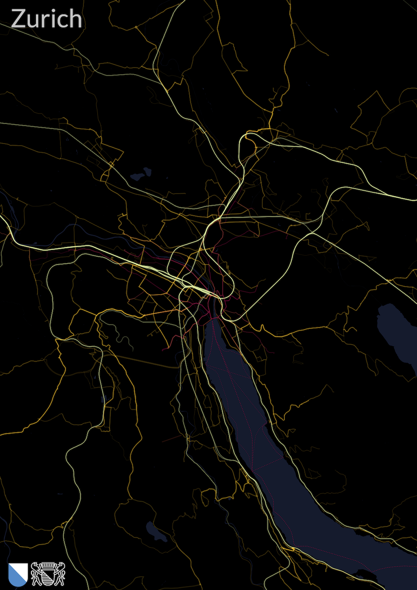
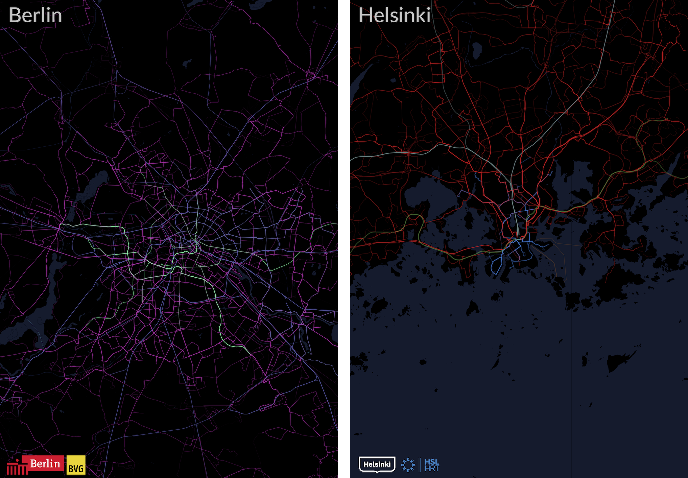

Read GTFS
Cityliner loads routes, shapes, trips, and schedules from a public transport feed.

GTFS to city posters
Cityliner maps route frequency from GTFS feeds. Thick, bright lines show where vehicles run most often.
Each image uses the same rule: more service means a stronger line.




The poster is data-driven. The visual style comes after the network is measured.
Cityliner loads routes, shapes, trips, and schedules from a public transport feed.
It counts how often route segments are used within the selected area.
It exports a high-resolution PDF with route colors, water, borders, and optional logos.

Custom work
The code is public. Raw feeds, processed data, print masters, customer files, and commercial workflow stay private. Commercial posters use logo-free layouts unless logo rights are confirmed.